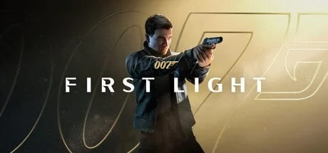

007 First Light: The Dawn of a New James Bond Gaming Era
Posted on: March 26, 2026
The legendary world of James Bond is finally returning to gaming massive way with 007 First Light, developed by the creators of the Hitman series, IQ Interactive. This upcoming action-adventure spy thriller is already becoming one of the most anticipated games of 2026. Instead of showing Bond as the already polished secret agent everyone knows, this game takes players back to the very beginning of his journey. fearless James Bond, a man who still has to earn the 00 status.
The Games focuses on Bond's origin story, showing how a talented but reckless Royal Navy recruit slowly transfrom into the world's most dangerous spy. From intense stealth missions explosive action scenes, 007 First Light promises the perfect mix of spycraft, cinematic storytelling, and freedom-based gameplay. According to official updates, the game is now launching on May 27, 2026, after a short delay for extra polish.
Release Date
- Offical Launch: May 27, 2026
- Platforms: PS5, Xbox Series X/S, PC
- Nintendo Switch 2 version: coming latter in summer 2026
Gameplay Features That Look Insane
This is where the game gets seriously exciting. Since it's made by the Hitman developers, you can expect multiple ways to complete missions.
Main Features
- Stealth Espionage Gameplay
- Open mission areas with freedom
- Gadgets and spy tools
- Car chases with Bond-style vehicles
- Hand-to-hand combat
- Gunplay + silent takedowns
- Dialogue and bluff mechanics
- Global locations and exotic missions
- Cinematic action scenes
- Replayable missions with modifiers
One of the best parts is that players won't be forced into a single style. You can go silent like a true assassin, use gadgets samartly, or go full action mode when things get messy. This freedom instantly gives strong hitman vives but with a much bigger cinematic James Bond feel.
Story and setting
The story follows Bond as he enters MI6's elite
00 programme, where he is pushed into dangerous missions across the globe.
A rouge former british agent, 009, becomes the main threat, forcing Bond into
deadly opreations that test his skill, intelligence, and judgment.
The world design looks stunning, with missions taking place in:
- Snowy mountains
- Underground black markets
- Luxury spy locations
- Secret militsry compounds
- High-speed city chase routes
This globe-trotting structure gives it that classic Bond movie felling.

Why The Hype Is So High
Fans are especially hyped for:
- Better stealth than old bond games
- Huge replay value
- Stylish Bond gadgets
- A fresh young Bond story
- Massive cinematic set pieces
- Choice-based mission design
Community reactions are also super positive, with many players calling it a perfect mix of Hitman + Uncharted + classic Bond Movies.
Final Thoughts
007 First Light looks like a true next-gen James Bond experience. With a fresh origin story, smart stealth gameplay, globe-trottong missions, gadgets, chases, and stunning visuals, this game has all the ingredients to become one of the top action-adventure games of 2026
If IQ Interactive delivers the same level of creativity they gave Hitman, then this game could easily become a masterpiece spy thriller in gaming history.